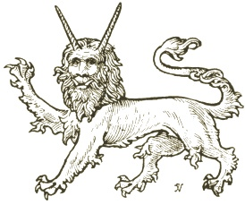

Sacred Texts Legendary Creatures Symbolism
Buy this Book at Amazon.com
|  | Fictitious and Symbolic Creatures in Artby John Vinycomb[1909] |
This is a review of the folk-lore of animals, mostly of a legendary or purely symbolic nature, particularly as appearing in English Heraldry. It's a gold-mine of lore about such fantastic beasts as the hydra, the basilisk, the phoenix, as well as angels, dragons, mermaids, sphynxes and so on. Vinycomb also covers heraldic versions of actual animals, such as the 'Tyger,' and the Heraldic Pelican and Dolphin. Included are over a hundred illustrations of fantastic creatures. Overall, a delight for browsing.--J.B. Hare, May 25, 2009.